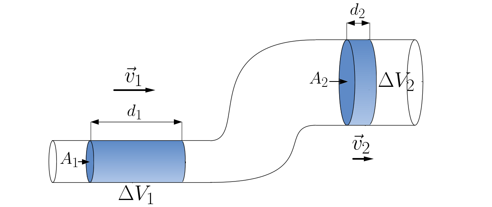
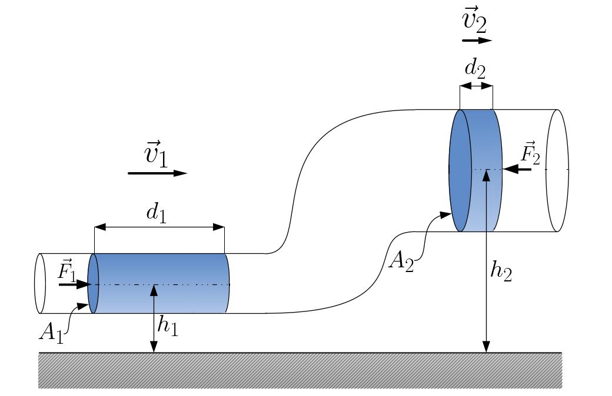

Aula5-37: Hidrodinâmica
Lúquido ideal
É um líquido ideal aquele líquido que possui as seguintes características:
◦ Incompressível (volume invariável);
◦ Não viscoso (não pegajoso);
◦ Escoamento estacionário (a velocidade de escoamento pode mudar de acordo com a posição, mas não muda com o tempo).
Vazão
Vazão é a grandeza física que mede o volume de líquido escoado por unidade de tempo:
⚛ UNIDADE DE MEDIDA:unidade de medida, reconhecida no SI, é:
Mas também é possível se medir a vazão através da massa escoar (em vez do volume), usa-se, então, como unidade de medida o:
Equação da continuidade

Observe a figura ao lado, como consequência da incompressibilidade do líquido, podemos afirmar que, para um intervalo de tempo qualquer, o volume de líquido que entra numa extremidade do tubo é igual ao volume que sai na outra extremidade; com isto podemos, também, afirmar que a vazão é a mesma. Logo:
Fórmula final:
Corolário:
A mais meritória de destaque dentre as consequências derivadas desta equação é o fato de que a área através da qual escoa um fluido é inversamente proporcional a sua velocidade, isto é: – A velocidade do fluido aumenta na medida em que o tubo se afina. A velocidade do fluido diminui quando o tubo se engrossa.
Equação de Bernoulli

Uma porção de matéria é impelida a entrar pela ponta de baixo do tubo pela força F1. Uma porção de matéria é expelida pela ponta de cima da tubulação sofrendo a resistência de uma força F2.
Sabemos, do teorema da energia cinética, que o trabalho da força resultante é igual a variação da energia cinética:
Após isto, façamos algum algebrismo:
Rearranjando os termos da expressão, obteremos a equação de Bernoulli:
Podemos ainda escrever:
Em que:
◦ é Pressão estática;
◦ é Pressão atmosférica;
◦ é Pressão dinâmica.